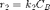
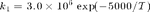
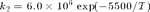
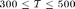

Problem 19.15: Constrained Nonlinear Optimization
A reversible chemical reaction, A = B, occurs in an isothermal continuous stirred-tank reactor. The rate expression for the forward and reverse reactions are given by

where the rate constants have the following temperature dependence:


Each rate constant has units of 1/hr and T is in K.
Determine the optimum values of the temperature T and the flowrate to maximize the steady-state production rate of component B. The allowable values are and .
Contents
Available Information
V = 200; % liters Fa = 150; % liters/hour Caf = 0.3; % moles/liter Cbf = 0.3; % moles/liter k1 = @(T) 3e6*exp(-5000/T); % 1/hr k2 = @(T) 6e6*exp(-5500/T); % 1/hr
Material Balances
These functions express the material balances for the two components Ca and Cb, and the total production of b. deriv(Ca,Cb,Fb) computes a two element vector that will be equal to zero at steady-state.
deriv = @(Ca,Cb,Fb,T) [ ...
Fa*Caf - (Fa + Fb)*Ca - k1(T)*Ca + k2(T)*Cb;
Fb*Cbf - (Fa + Fb)*Cb + k1(T)*Ca - k2(T)*Cb];
Production of B
production = @(Cb,Fb) (Fa + Fb)*Cb;
Decision Variables with Upper and Lower Bounds
x(1): Ca 0 <= Ca <= Caf + Cbf x(2): Cb 0 <= Cb <= Caf + Cbf x(3): Fb 0 <= Fb <= 200 x(4): T 300 <= T <= 500
lb = [0; 0; 0; 300]; ub = [Caf+Cbf; Caf+Cbf; 200; 500]; x0 = (lb + ub)/2;
Objective function
fmincon solves minimization problems. In these terms, the objective is to minimize the negative of production.
fun = @(x) -production(x(2),x(3));
Steady-State Constraints
ceq = @(x) deriv(x(1),x(2),x(3),x(4));
Constrained Nonlinear Minimization
xopt = fmincon(fun,x0,[],[],[],[],lb,ub,@(x)deal([],ceq(x)))
Warning: The default trust-region-reflective algorithm does not solve problems
with the constraints you have specified. FMINCON will use the active-set
algorithm instead. For information on applicable algorithms, see Choosing the
Algorithm in the documentation.
Warning: Your current settings will run a different algorithm (interior-point)
in a future release.
Local minimum possible. Constraints satisfied.
fmincon stopped because the predicted change in the objective function
is less than the default value of the function tolerance and constraints
are satisfied to within the default value of the constraint tolerance.
Active inequalities (to within options.TolCon = 1e-06):
lower upper ineqlin ineqnonlin
3
xopt =
1.0e+02 *
0.001269016946957
0.001730983053043
2.000000000000000
4.549924285857304
Display results
disp('Optimal Operating Point'); displaytable(xopt,{'Ca','Cb','Fb','T'});
Optimal Operating Point
Undefined function 'displaytable' for input arguments of type 'cell'.
Error in Ch19_P15 (line 76)
displaytable(xopt,{'Ca','Cb','Fb','T'});